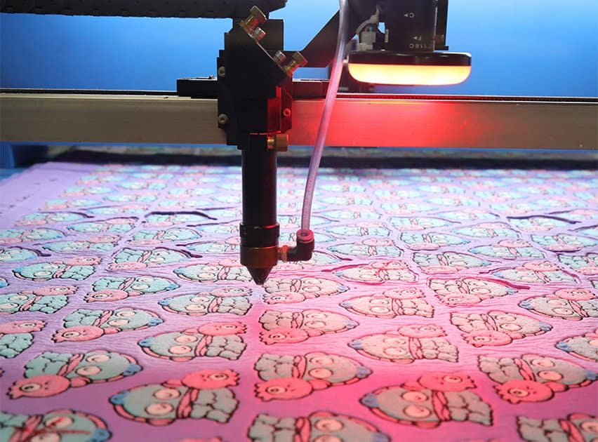

Merrowed Border (Wrap-around)
The industry standard for symmetrical shapes (circles, rectangles, rockers). A thick, overlocked stitch wraps from the front to the back of the patch, creating a 1/8" protective bumper. **Best For:** Biker patches, pilot tags, and service uniforms.

CO2 Laser Heat-Seal
Essential for complex, irregular shapes with sharp inner corners. The laser melts the polyester twill and thread simultaneously, creating a permanent, microscopic heat-seal that prevents all fraying. **Best For:** Intricate brand logos and tactical gear.

Satin-Stitch Border
A flat, high-density embroidery border that lies flush against the garment. Provides a sleek, modern finish without the bulk of a Merrow. Ideal for minimalist high-fashion applications. **Best For:** Streetwear brands and headwear.

Hot-Cut Edge
Utilizes a heated knife to seal the edges during the cutting process. A cost-effective alternative to laser cutting for simple irregular shapes that still requires a high-integrity seal. **Best For:** Bulk promotional runs and large emblems.